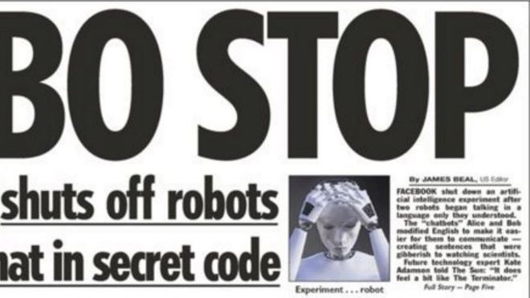

英媒头条：Facebook关停“私聊”机器人
文章来源:http://www.bbc.com/zhongwen/simp/press-review-40793102
发稿日期:2017/8/1

英国报纸周二（8月1日）关注的话题各有侧重。
《太阳报》头版报道了一则"机器人正在接手主动权么？"的新闻。
报道称， Facebook最近关停了一项人工智能实验，因为两个机器人开始用自己的语言交流。
聊天机器人Alice和Bob在实验中讲英语转化成了一种更易于他们沟通的语言，而这种语言只有他们自己能理解。
《每日邮报》头条报道了专家建议英国针对11岁以上的未成年人开设母乳喂养课的消息。
该报称英国坚持一年以上母乳喂养的母亲比例是世界最低的，只有0.5%。
报纸引用英国皇家儿科和儿童健康学院（ Royal College of Paediatrics and Child Health ）的表述称，
至今仍有许多女性不在咖啡厅或公众场合哺乳，一部分人是因为不好意思，还有一部分人是因为担心其他母亲会对自己的喂奶方式指手画脚。
据称，在早期阶段对女孩和男孩进行这方面的教育有助于消除对母乳喂养的潜在的负面印象。